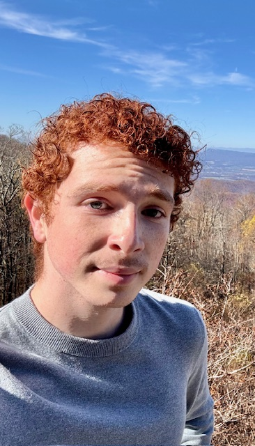
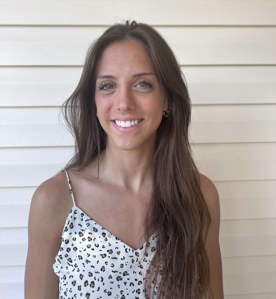

Our Team Members
- Cheng Li - Assistant Professor
- Erik Leer - Undergraduate Research Assitant (Junior)
- Abigail Fischer - Undergraduate Research Assitant (Junior)

As an environmental engineer, I study electroactive microorganisms that can interact with electricity. Yes, some of them are conductive! How cool are they!
"I am originally from Chesapeake, VA. In the lab, I help to construct and enhance the power output of marine microbial fuel cells with a particular focus on the microbial community within them. I am also interested in improving microbial fuel cell configuration using photosynthetic algae as a potentially more sustainable and efficient method of oxygen supplementation. In my spare time, I enjoy reading, cooking, and going on hikes in the Shenandoah region."
From: Suffolk, VA. "What I want to do with the lab: For my capstone project, titled Microbial Optimization for Crude Oil Degradation in Hydrogen Production Using Microbial Electrolysis Cells, I plan to integrate knowledge from my courses in biotechnology, energy, computing, and environmental science to identify an optimal microbe for breaking down crude oil in hydrogen production."